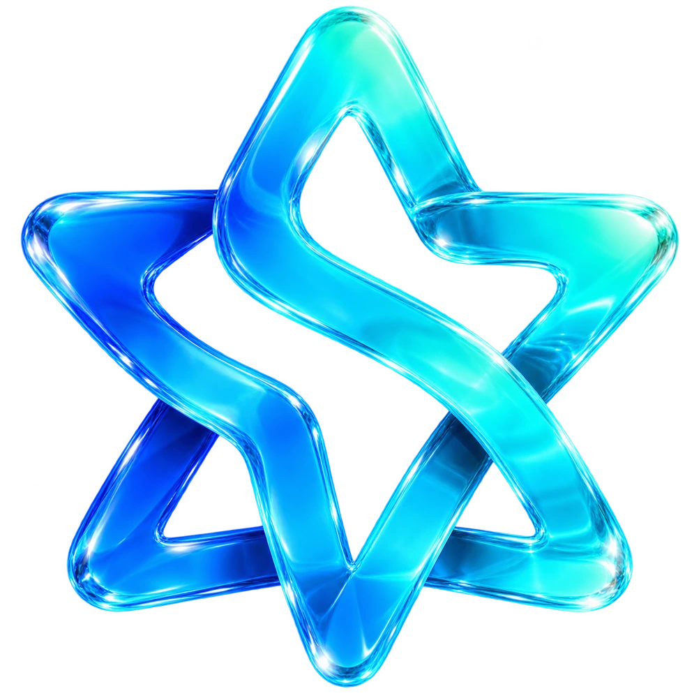
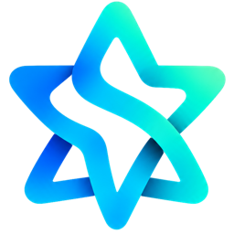

Construir no basta.
El mercado tiene que responder.
Un mal ajuste producto–mercado apareció en el 43 % de los cierres analizados.
Tu idea merece algo mejor
que avanzar a ciegas.
Inteligencia artificial y experiencia humana para transformar lo que imaginas en una startup real.
PATHFINDER · GRATUITO · SIN REGISTRO
No te faltan ganas. Lo difícil es saber qué construir, para quién y qué comprobar primero.
Un mal ajuste producto–mercado apareció en el 43 % de los cierres analizados.
Quedarse sin capital apareció en el 70 % de esos cierres.

NOVA STUDIOUN MISMO CONTEXTO EMPRESARIALInvestiga competidores, prepara entrevistas, analiza ventas y da seguimiento a tus objetivos. Datos e hipótesis, siempre diferenciados.
Investiga, decide y organiza tu avance sin volver a explicar tu negocio en cada herramienta.
Una buena pregunta vale más que otra suposición.
¿Cómo reservaste tu último estudio?
¿Qué fue lo más difícil de ese proceso?
¿Qué alternativa utilizas hoy?
Registra experiencias reales.
Separa lo que sabes de lo que supones.
Ocho preguntas clave. Un análisis de tus respuestas. Tres pruebas para dar el siguiente paso.
SIN CORREO. SIN TARJETA.Diseña, desarrolla y personaliza negocios digitales con IA. Apps, SaaS, páginas web y tiendas online.
Descubre un lugar para crear
algo que todavía no existe.
Hay decisiones que merecen otra perspectiva. Contrasta las tuyas con profesionales y empresarios experimentados.
«¿Y si mi idea no funciona?»
¿Qué debería comprobar
antes de invertir más?
Trabaja tu hipótesis, una prueba y el criterio para decidir.
Elige la capacidad que necesita tu startup.
De una idea a una primera prueba.
Más capacidad para tu siguiente etapa.
| Función | Build · USD 17 | Growth · USD 37 |
|---|---|---|
| MVP Creator, Digital Creator y Manager | Incluidos | Incluidos |
| Copiloto de IA | Básico | Ampliado |
| Startupia Operators | Esenciales | Ampliados |
| Gestión de objetivos | Básica | Avanzada |
| Historial y contexto empresarial | Incluidos | Incluidos |
| Capacidad de IA | Limitada | Mayor capacidad |
| Mentorías | USD 197/hora, por separado | USD 197/hora, por separado |
Los límites concretos de uso se definirán según el consumo y los costes operativos. No se ofrece IA ilimitada.
Ese también es un punto de partida. Pathfinder revisa ocho dimensiones de tu idea y propone pruebas concretas. La demanda se comprueba con clientes reales.
Un contexto empresarial compartido: tu idea, investigación, decisiones, producto, tareas y aprendizajes. Cambias de herramienta conservando el recorrido de tu startup.
MVP Creator define, diseña y desarrolla un producto mínimo viable para probarlo con clientes. Digital Creator amplía la creación a negocios digitales, apps, SaaS, webs y tiendas personalizables con IA. La escena de esta página es una demostración visual de ese proceso.
Sí. Startupia Mentors es independiente de la suscripción de OS. El precio es USD 197 por hora; la disponibilidad y las condiciones de la sesión se confirman antes del pago.
No. Es una orientación preliminar basada en tus respuestas y reglas transparentes. Te ayuda a identificar preguntas abiertas y diseñar pruebas; no sustituye la investigación ni garantiza resultados.
Tu ambición ya está.
Ahora, dale dirección.